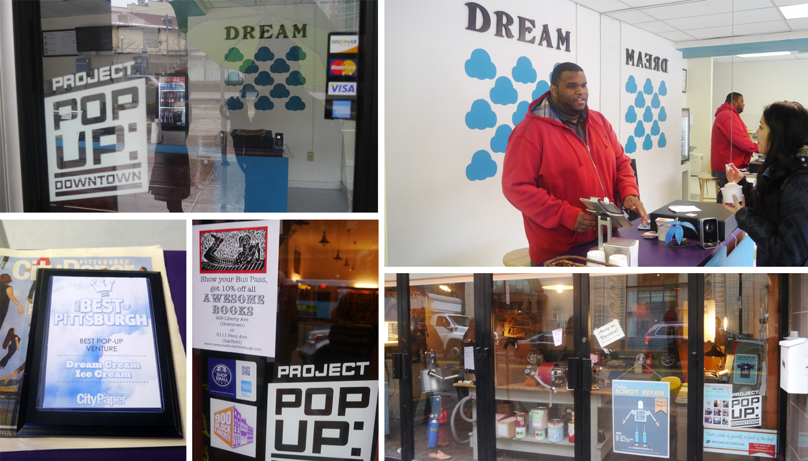
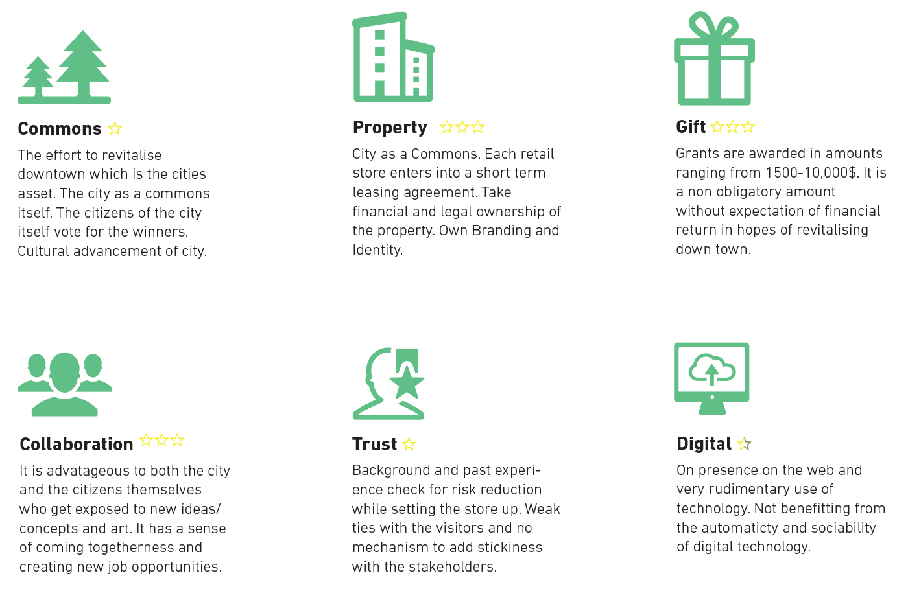
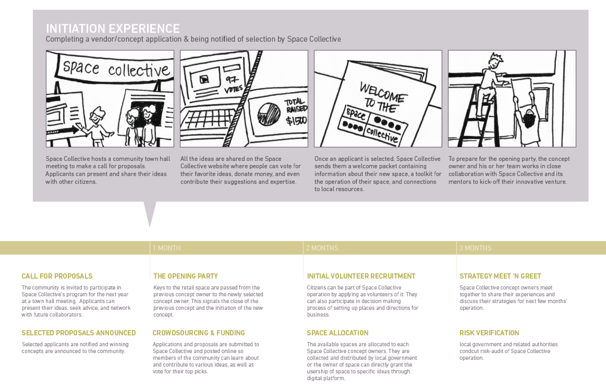
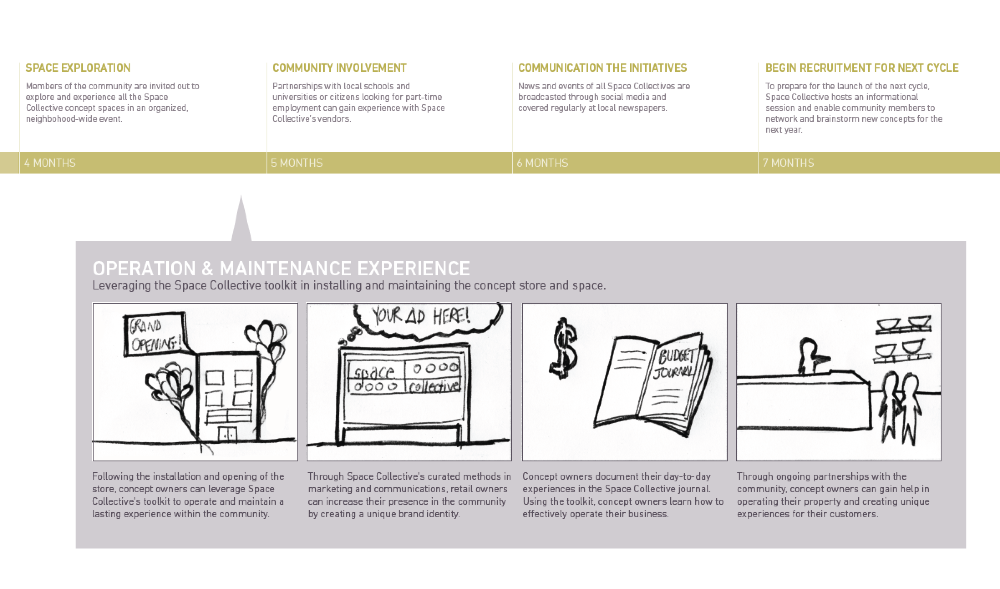
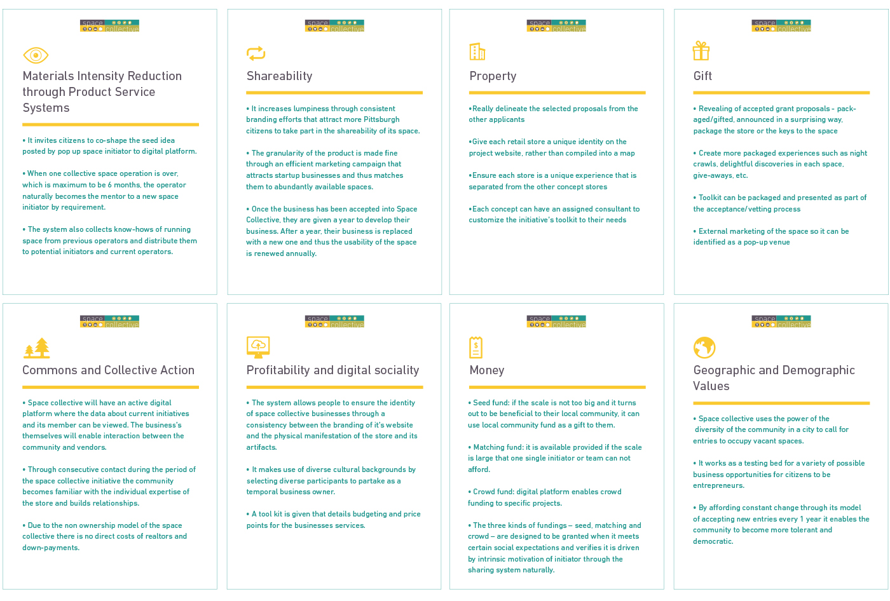

Our design solution address the issue of how to design for granular interactions in a service that is systemic and tight knit. We designed a toolkit that consisted of the new service model, key service journey touchpoint including a manual for transitions for new businesses in a shared space that could be handed to policy makers and participants of sharing systems in cities.
Challenge
Design teams had to pick an existing sharing service and redesign it to enable a long term sustainable turn around. Our team chose to work on Pittsburgh Downtown Pop Up (PDP) program initiated by City of Pittsburgh. We analysed the existing service which was clearly not consistent from underlying concepts of the sharing economy (property, gift, commons, collaboration and trust) to have a better understanding of what would entail in making a service more shareable.
Solution
spacecollective is a sharing service that will boost economy, empower the local community, leverage policy and good governance, foster growth, bring diversity and opportunity for collaboration and equity between new cultures through the sharing of property for social change. The sharing of property would be modeled around the pop-up retail practice.
Role
Project planning and organizing meetings, design research, synthesis, final design deliverables.
Team
Eunki Chung, Maureen Grinswold, Shiba Sheikh and
Katy Tsai
Advisor
Cameron Tonkinwise

Our initial research phase lead us to the various pop-stores in downtown Pittsburgh. We conducted desk and onsite study to understand the current state of the system and infrastructure.
Pittsburgh Downtown Project Pop Up program (PDP) is a program of Mayor Luke Ravenstahl, in conjunction with the Urban Redevelopment Authority, Department of City Planning and Pittsburgh Downtown Partnership. Over 90 artists, entrepreneurs, and non-profits submitted proposals to activate Downtown storefronts in the year of 2012. Finalists were invited to “pop” into Downtown for limited engagements. These finalists received grants with which they will occupy currently vacant stores in Downtown throughout the year.
Analysis of the current system revealed that the value flow of the service was inconsistent and the need of engaging the community and increasing social interactions in the downtown Pittsburgh space was not being met.



